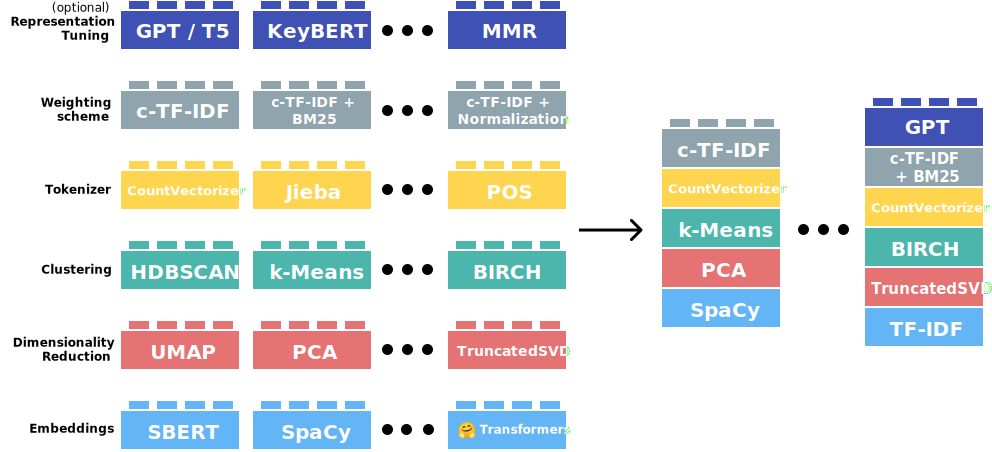

Topic Modeling
class notes
Introduction
In text mining, we often have collections of document that can be grouped into different topics:
- News articles are naturally divided into topics such as sports, politics, economics, or showbiz. And each of this could be further divided into more specific groups.
- Research articles follow a disciplinary structure, and within that they delve into specific research subjects
Topic modeling is is a statistical technique used in Natural Language Processing (NLP) to discover abstract topics within a collection of documents. By doing so, it enables both an automatic grouping of documents, and the revelation of underlying subjects or motifs discussed across the corpus without the need of prior knowledge of the topics. It can be considered as a clustering algorithm, given that it groups documents. It can be also consider a method of dimensionality reduction, similar to PCA on numeric data, because it reduces the representation of documents from all their word to a classification or distribution among a shorter group topics. You could think of topic modeling as a set of “amplified reading” techniques.
As David Blei puts it:
topic modeling algorithms do not require any prior annotations or labeling of the documents. The topics emerge from the analysis of the original texts. Topic modeling enables us to organize and summarize (…) archives at a scale that would be impossible by human annotation (Blei 2012)
Latent Dirichlet Allocation LDA
There are several methods for implementing a topic model. However LDA stands out as particularly favored. LDA conceptualizes each document as a mixture of various topics, and each topic as a mixture of words. This allows documents to show overlap in terms of content.
LDA is one of the most popular techniques for topic modeling. It was introduced by David Blei, Andrew Ng, and Michael Jordan in 2003 (Blei, Ng, and Jordan 2003). This model assumes that:
- each document in a corpus is a mixture of various topics and
- that each word in the document has a specific probability to belong to any topic.
- Therefore, a topic is a probability distribution in the word space and a document is a probability distribution in the topic space.
An intuition on LDA can be seen in the following figure:
¿Which is the logic behind the LDA algorithm?
LDA assumes that topics are pre-existent: they are defined before any data has been generated. So, the number of topics (generally, named \(k\)) is an hyperparameter.
The logic is that the data generating process of documents in the corpus goes as follows:
For every document within the corpus, we initiate the generation of its words through a two-step procedure:
Initially, we randomly select a distribution over topics for the document.
Then, for each word present in the document:
- We randomly select a topic from the distribution over topics determined in the first step.
- and then, we randomly select a word from the corresponding distribution over the vocabulary associated with the chosen topic.
This idea behind LDA can be illustrated like:

It is called Dirichlet because of Dirichlet distributions, which is a type of function in bayesian statistics that generates as an output a multinomial distribution (the type of distribution that we need to represent a distribution over topics for example).
If we assume that the data generating process of text in documents is that described above, we can then go to our corpus to see the observed words in documents and infer backwards which are the topics that generated them.
Of course, no one thinks that the authors of the text actually roll a dice for each word based on a distribution of topics. Nevertheless, the outcomes of this model have proven to be useful tools to build topics in documents.
Outputs and interpretation
There are two main outputs in LDA:
- Topic-Term Matrix: This matrix represents the distribution of words for each topic. Each row corresponds to a topic, and each column corresponds to a word in the vocabulary. The values in the matrix represent the probability of each word occurring in each topic.
- Document-Topic Matrix: This matrix represents the distribution of topics for each document. Each row corresponds to a document, and each column corresponds to a topic. The values in the matrix represent the probability of each topic occurring in each document.
Based on these matrices it is possible to construct some summaries in order to gain an idea of the underlying subjects present in the corpus, understand the topics discussed in individual documents, and explore relationships between topics and documents.
In the left panel of the above figure, we can observe the main topics and, within them, the words with the highest probability associated to each topic, estimated from a corpus of scientific articles from Science. We can see that each distribution of words allows assigning a “label” to the topic.
- Words such as “human,” “genome,” “DNA,” suggest a topic linked to genetics.
- Likewise, “evolution,” “species,” “life,” seem to speak of a topic about evolution.
- We can repeat this exercise with each one of the topics estimated in a LDA model.
In the left panel, we see the topic distribution of the article in the first figure. This document shows a mixture of topics. Not all topics are activated in all documents.
How to select the number of topics?
Automatic evaluation
Selecting the \(k\) value is not trivial, and it can create widely different results. There are various metrics that allow quantifying the fit (i.e., how “good” it is) of the number of topics defined in quantitative terms. Some of those are:
Perplexity: measures a model’s ability to generalize and predict newly-presented documents. It is based on the model’s likelihood; lower values are better.
Coherence: Is the average pointwise mutual information (PMI) of two words randomly taken from the same document. A coherent topic will display words that tend to occur in the same documents. This means that the most probably words in a topic should have high mutual information. Higher values are better, and it imply a more interpretable topic model.
Diversity: Is the percentage of unique words in the top 25 words of all topics. A diversity close to 0 indicates redundant topics; diversity close to 1 indicates more varied topics.
Qualitative evaluation
the use of these metrics leads to models that achieve good statistical performance but may not necessarily generate interpretable topics.
A larger number of topics tends to yield better metrics and allows for a high resolution of the latent structure of the corpus. However, it has been observed that increasing the number of topics tends to decrease the quality of the topics in terms of interpretability (Mimno et al. 2011) (Chang et al. 2009). Thus, similar to many other problems, model complexity and interpretability tend to move in opposite directions.
Therefore, it is often possible to use other approaches to select the number of topics. In general, we could think of two main ways to do this:
- we could define a relatively small number of topics and try to make them all “interpretable”
- we could estimate a large number of topics and only consider those that are relevant to our analysis questions; this is the method that (Diego Kozlowski and Altszyler 2023) followed in the paper we will discuss in the next section.
Which approach is the most suitable? This will depend on the research questions and the type of corpus in use. If it is a relatively homogeneous corpus and the interest is to have an initial overview of its content, perhaps the first approach may be more fruitful (“few but good”). If, on the other hand, it is a potentially very diverse corpus and we are looking to detect some specific topics, then the second approach might work better.
Up to this point, we have thought of LDA (or any topic modeling technique) as the endpoint of the analysis. Once we train a certain \(k\) that is satisfactory, we move on to model validation and interpretation. However, we can also think of it as a starting point. For example, we can use topic modeling to have an initial descriptive overview of a given corpus and to “guide” a deep reading of some documents in the corpus. Suppose we have a very large corpus of textual documents. We cannot read the entire corpus, but we would like to have an idea of how to choose which documents to read. We can train an LDA model and use it to guide our in-depth reading of the corpus. This could either be a couple of articles per topic, or as a tool to find those articles that delve into the topic of interest for our study.
We can also use it as part of the preprocessing of a corpus and the feature construction process. It is common for a corpus to contain documents or parts of documents in languages other than the majority language of the corpus. If this were to happen, it is highly likely that one or several topics would concentrate terms in that language. Since we can also obtain the topic distribution per document, it would be very easy to clean the texts that do not correspond to the majority language: we simply filter out those documents with a high prevalence in the topic that groups terms in another language. Also, it can be used to build the dictionary of tokens to remove together with the stop words. For example, if some of the documents have latex or html code, they might appear as specific topics.
We can also think of the topic-document matrix as features to be used. Instead of having a TDM with all the vocabulary, we can use the document-topic matrix as a dense representation of each document and use it as features for a text classification model.
Discussion
Here we will discuss two critical applications of LDA. The first (Diego Kozlowski and Altszyler 2023) aims to advance the identification of gender stereotypes. For this, the authors work with a corpus of about 24,000 articles from magazines oriented towards women and men and seek to detect the main topics of each magazine and analyze their distribution over time. The results showed that topics such as Family, Business, and Women as sexual objects present a prevalence and bias that fades over time. In contrast, in topics like “Fashion” or “Science”, the differences between magazines for men and women remain. For this analysis, the authors created a corpus with both magazines, built the topics and then went through the topics to find those of interest for their study and see from which journal they belonged.
In a second study (Kozlowski et al. 2022) shows the alignment between research topics in scientific research articles and the race and gender identity of author. The authors worked with a large-scale bibliometric database ( 5.5M articles indexed in the Web of Science and 1.5M distinct US first authors). They used LDA on the title, abstract, and keywords of each article to infer the topics of the corpus and the topic distribution per article. Strong correlations are observed both in academic impact and in topics with the identities of authors. For example, women tend to publish more in topics related with gender-based violence, while Black authors publish more on the topic of police brutality.
Some limitations on LDA
We would like to emphasize some specific assumptions of LDA:
- Topics are independent of each other.
- The distribution of words within a topic (the content of a topic) is constant. Document 1 uses the same words to compose topic 1 as documents 2, 3, etc.
- The estimation of topics is done exclusively based on the text of each document in the corpus, without incorporating any other type of information.
Let’s consider, for example, a study over a long period of time, like the work by (Blei 2012) that we mentioned above containing scientific articles spanning over 100 years. There is a possibility that the vocabulary about genetics changed between the late 19th century and the present, and that different terms are used.
Structural Topic Modeling (STM)
STM (Structural Topic Modeling) is a topic modeling technique that aims to address the limitations mentioned above. The main feature is that it allows the introduction of covariates, meaning it allows topics to change the model based on one or more metadata variables of the text (publication date, author’s gender, nationality, publication type, etc.). Any information about the documents can be used in STM.
Thus, we first need to define two “dimensions”: topic content and topic prevalence. The former refers to the composition of words that create each topic. The latter refers to the composition of topics that constitute each document. STM will allow the introduction of covariates that affect both dimensions.
Limitations of Bag of Words
These topic modeling techniques are based on the Bag of Words (BoW) model. This way of vectorizing text has some advantages:
- it is simple: we just count the frequency of occurrence of each word in the vocabulary in each document
- it is easy to implement
However, it also comes with limitations:
- it is insensitive to the order of words
- it does not take into account grammatical structure
- it fails to fully capture semantic relationships between words: Each word is conceived independently, so this cannot consider the conceptual similarity of terms. For example, ‘dog’ will be as distant to ‘beagle’ than to ‘cat’ or ‘table’
- it has high dimensionality: it is common for the vocabulary size of an average corpus to be high, above 10,000 words; this means that our TFM will have about 10,000 columns
- it has high sparsity: in turn, since a document only uses a limited subset of terms from the vocabulary, it is expected that the TFM will contain many empty elements (zeros); this poses a problem when calculating similarity or correlation metrics between documents or words.
BERTopic
While we will not be using this technique in the course (since its implementation is on Python), we want to mention the existence of this new technique that uses new NLP models such as document embedding to solve some of the limitations mentioned above.
BERTopic is a state-of-the-art topic modeling technique that harnesses the power of pre-trained BERT (Bidirectional Encoder Representations from Transformers) embeddings to identify coherent topics within a corpus of text data.
Unlike LDA, it is a combination of pre-existing techinques more than a single model, and they can be interchanged with different alternatives:

- Pre-trained BERT Embeddings: BERTopic starts by leveraging pre-trained BERT models, which are trained on vast amounts of textual data using a powerful Transformer architecture. These models encode each word or token in the document into dense vector representations that capture rich semantic information. The word embeddings can be aggregated into Document Embeddings that encapsulates the semantic meaning of all the words in the document.
- Dimensionality Reduction: To reduce the dimensionality of the dense document embeddings while preserving semantic relationships, BERTopic applies dimensionality reduction techniques such as UMAP (Uniform Manifold Approximation and Projection) or t-SNE (t-distributed Stochastic Neighbor Embedding).
- Hierarchical Clustering: The output is then clustered using hierarchical clustering algorithms such as HDBSCAN (Hierarchical Density-Based Spatial Clustering of Applications with Noise) or K-Means. Hierarchical clustering allows for the identification of coherent topic clusters based on the semantic similarity of documents.
- Topic Representation: After clustering, each document is assigned to the most representative topic cluster. BERTopic also identifies representative keywords for each topic cluster by analyzing the most frequent words within the documents assigned to that cluster.
One last important aspect is its modular nature. Each of the stages mentioned above can be carried out by different models. For example, instead of using S-BERT for generating embeddings, Word2Vec or a similar technique could be employed. Similarly, the dimensionality reduction stage could be performed by PCA instead of UMAP.